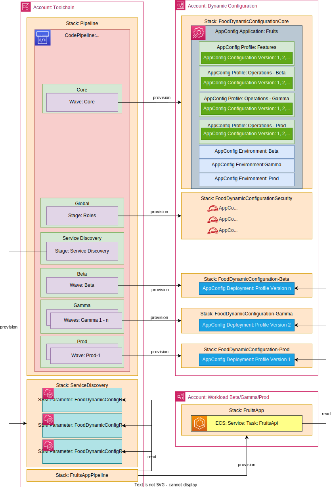

Dynamic Config Pipeline reference implementation¶
This presents a reference implementation of the Dynamic Configuration Pipeline reference architecture. All infrastructure for this reference implementation is defined using the AWS Cloud Development Kit (CDK). The pipeline is defined using CDK Pipelines, which provisions the pipeline in AWS CodePipeline. The source code for this reference implementation is available in GitHub for running in your own AWS accounts.
This reference implementation follows the following architecture: 
Local Development¶
Developers need fast feedback for potential issues with their code. Automation should run in their developer workspace to give them feedback before the deployment pipeline runs.
Pre-Commit Hooks
Pre-Commit hooks are scripts that are executed on the developer's workstation when they try to create a new commit. These hooks have an opportunity to inspect the state of the code before the commit occurs and abort the commit if tests fail. An example of pre-commit hooks are Git hooks. Examples of tools to configure and store pre-commit hooks as code include but are not limited to husky and pre-commit.
repos:
- repo: https://github.com/pre-commit/pre-commit-hooks
rev: v2.3.0
hooks:
- id: check-yaml
- id: check-json
- id: trailing-whitespace
- repo: https://github.com/pre-commit/mirrors-eslint
rev: v8.23.0
hooks:
- id: eslint
- repo: https://github.com/gitleaks/gitleaks
rev: v8.16.2
hooks:
- id: gitleaks
Source¶
Infrastructure Source Code
The infrastructure source code can be found in the infrastructure directory. It is intended to serve as a reference, but much of the code can also be reused in your own CDK applications.
The infrastructure source code defines both the deployment pipeline (AWS CodePipeline and the infrastructure that allows to store, manage and access the configuration (AWS AppConfig.
import { Stack, StackProps } from 'aws-cdk-lib';
import { ManagedPolicy, Role } from 'aws-cdk-lib/aws-iam';
import { Construct } from 'constructs';
import { OrgPathsPrincipal } from './org-paths-principal';
import { Config, WorkloadEnvironment } from '../config';
export class DynamicConfigurationGlobalStack extends Stack {
constructor(
scope: Construct,
id: string,
workloadName: string,
workloadEnvironments: WorkloadEnvironment[],
props?: StackProps,
) {
super(scope, id, props);
workloadEnvironments.forEach((workloadEnvironment) => {
const role = new Role(
this,
Config.generateName(workloadName, 'DynamicConfigRole', workloadEnvironment.name),
{
roleName: Config.generateName(
workloadName,
'DynamicConfigRole',
workloadEnvironment.name,
),
assumedBy: new OrgPathsPrincipal([
// This is set to '*' all accounts in the workload organization path are expected to need access to the Dynamic Config
[workloadEnvironment.workloadOrganizationPath, '*'].join('/'),
]),
},
);
workloadEnvironment.getUniqueRegions().forEach((region) => {
const policy = ManagedPolicy.fromManagedPolicyName(
this,
Config.generateName(
'DynamicConfigPolicy',
workloadName,
workloadEnvironment.name,
region,
),
Config.generateName('DynamicConfigPolicy', workloadName, workloadEnvironment.name, region),
);
role.addManagedPolicy(policy);
});
});
}
}
Please note that the infrastructure code is written in Typescript, which is one of six (as of April 2023) programming languages supported by CDK.
IaC Unit Test Code
The infrastructure as code unit test source code can be found in the infrastructure/test directory. It is intended to serve as a reference but much of the code can also be reused in your own CDK applications.
test('Environments are generated on us-west-2', () => {
const app = new cdk.App({ context: context });
const config = Config.load(app.node);
const stack = new DynamicConfigurationCoreStack(
app,
'Core',
config.workloadName,
config.workloadEnvironments,
{
env: { account: '123456789012', region: 'us-west-2' },
},
);
const template = Template.fromStack(stack);
template.resourceCountIs('AWS::AppConfig::Environment', 3);
template.hasResourceProperties('AWS::AppConfig::Environment', { Name: 'alpha' });
template.hasResourceProperties('AWS::AppConfig::Environment', { Name: 'beta' });
template.hasResourceProperties('AWS::AppConfig::Environment', { Name: 'prod' });
});
Feature Flags
Feature Flags are stored in AWS AppConfig, which is part of AWS Systems Manager. Feature Flags are defined in the config/features directory. Within that directory you will see 2 files, one for the feature flag definitions and the other for the values:
definitions.yaml: defines all feature flag and their types.
classification: boolean
values.yaml: Defines the values of all feature flags. Feature Flags are not intended to be used for environment- or region-specific configuration, e.g. enabling a feature only in production or enabling specific features in specific regions. Feature Flags are intended to enable separating release from deployment, so feature flag changes are released in the same way a software release version would be released. For every change to the Feature Flag values in this file, AppConfig creates a new version, which resembles the sum of all feature flag values. This version is deployed to the environments following the Software Development Lifecycle, i.e. to Beta first, then to Gamma and then to Production.
classification: true
Operational Configuration
Operational Configuration is stored in AWS AppConfig as well. Operational Configuration is defined in the config/operations directory. Within that directory, there is a JSON Schema file that defines the requires structure of operational configuration in every environment as well as environment-specific YAML files defining the configuration values per environment.
schema.json: defines the JSON schema that the Operational Configuration for each environment needs to satisfy.
{
"type": "object",
"properties": {
"logLevel": { "enum": ["FATAL", "ERROR", "WARN", "INFO", "DEBUG", "TRACE"] },
"environment": { "type": "string" }
},
"required": ["logLevel", "environment"]
}
{environmentName}.yaml: stores the operational configuration values, whereas{environmentName} matches the name parameter of the workloadEnvironments within the cdk.json file.
logLevel: ERROR
Build¶
Actions in this stage all run in less than 10 minutes so that developers can take action on fast feedback before moving on to their next task. Each of the actions below are defined as code with AWS Cloud Development Kit.
Synthesize Code
Uses your AWS Cloud Development Kit code to generate the AWS CloudFormation templates for your pipeline and resources.
IaC Unit Tests
The unit tests are run by npm at the same time the synth action occurs. The results of the unit tests are uploaded to AWS Code Build Test Reports to be able to track them over time.

Code Quality
ESLint statically analyzes your code to quickly find issues. You can use ESLint to create a series of assertions (called lint rules) that define how your code should look or behave. ESLint also has auto-fixer suggestions to help you improve your code. The pipeline will fail if any errors are found.

Additionally, cdk-nag is run to identify any security issues with the resources being created. The pipeline will fail if any are detected. The following code demonstrates how cdk-nag is called as a part of the build stage. The code also demonstrates how to suppress findings.
import * as process from 'process';
import * as cdk from 'aws-cdk-lib';
import { Aspects } from 'aws-cdk-lib';
import { AwsSolutionsChecks, NagSuppressions } from 'cdk-nag';
import { Config } from './config';
import { PipelineStack } from './pipeline-stack';
const app = new cdk.App();
const config = Config.load();
const props = {
description: `${config.workloadName} pipeline (${config.solutionCode})`,
env: {
account: process.env.CDK_DEPLOY_ACCOUNT || process.env.CDK_DEFAULT_ACCOUNT,
region: process.env.CDK_DEPLOY_REGION || process.env.CDK_DEFAULT_REGION,
},
};
new PipelineStack(app, 'DynamicConfigurationPipeline', props);
Aspects.of(app).add(new AwsSolutionsChecks());
NagSuppressions.addResourceSuppressions(
app,
[
{ id: 'AwsSolutions-KMS5', reason: 'Default CodePipeline KMS key' },
{ id: 'AwsSolutions-S1', reason: 'Default CodePipeline S3 bucket' },
],
true,
);
Secrets Detection
Gitleaks is used for secrets detection. The scanning is accomplished by a CDK CodeBuild job to run Gitleaks:
const gitleaks = new CodeBuildStep('GitLeaks', {
input: source.codePipelineSource,
buildEnvironment: {
buildImage: LinuxBuildImage.AMAZON_LINUX_2_2,
},
installCommands: [
`VERSION=$(curl https://api.github.com/repositories/119190187/releases/latest | jq .tag_name -r | sed 's/v//')`,
`if [ \${VERSION} == null ]; then VERSION=8.16.3; fi`,
`FILENAME=gitleaks_\${VERSION}_linux_x64.tar.gz`,
`wget https://github.com/gitleaks/gitleaks/releases/download/v$VERSION/$FILENAME`,
`tar -zxvf $FILENAME gitleaks`,
`chmod +x gitleaks`,
],
commands: [
`./gitleaks detect --source . --no-git --redact -v -r gitleaks.log`, // # no-git because the remote branch won't have a .git folder.
],
});
Static Application Security Testing (SAST)
The CodeBuild jobs for Gitleaks and Trivy are also used for SAST.
Software Composition Analysis (SCA)
Trivy is used to scan the source for vulnerabilities in its dependencies. The configuration files are scanned for configuration issues or vulnerabilities in any dependencies. The scanning is accomplished by a CDK construct that creates a CodeBuild job to run trivy:
import { TrivyScan } from './code-analysis/trivy-scan';
⋯
const trivyScan = new TrivyScan('TrivyScan', {
source: source.codePipelineSource,
severity: ['CRITICAL', 'HIGH'],
checks: ['vuln', 'config', 'secret'],
});
Software Bill of Materials (SBOM)
Trivy generates an SBOM in the form of a CycloneDX JSON report. The SBOM is saved as a CodePipeline asset. Trivy supports additional SBOM formats such as SPDX, and SARIF.
Deployments¶
This reference implementations contains multiple CloudFormation stack deployments.
Core¶
Creates the AppConfig application, deployment strategy, environments, feature flags and operational configurations and stores their references in the System Manager Parameter Store for all regions listed in cdk.json under workloadEnvironments. It also generates IAM Policies for access to those resources in preparation for the deployment stage.
workloadEnvironments is populated by the bootstrap.ts script and may also be edited manually.
{
"workloadEnvironments": [
{
"name": "alpha",
"workloadOrganizationPath": "o-orgid/r-rootid/ou-rootid-ouid/ou-abcd-aaaaaaa0",
"waves": [
{
"name": "alpha",
"regions": ["us-west-2"]
}
]
},
{
"name": "beta",
"workloadOrganizationPath": "o-orgid/r-rootid/ou-rootid-ouid/ou-abcd-aaaaaaa0",
"waves": [
{
"name": "beta",
"regions": ["us-west-2"]
}
]
},
{
"name": "gamma",
"workloadOrganizationPath": "o-orgid/r-rootid/ou-rootid-ouid/ou-abcd-bbbbbbb0",
"waves": [
{
"name": "gamma",
"regions": ["eu-central-1", "us-east-1"]
}
]
},
{
"name": "prod",
"workloadOrganizationPath": "o-orgid/r-rootid/ou-rootid-ouid/ou-abcd-ccccccc0",
"waves": [
{
"name": "Prod-Americas",
"regions": ["us-east-1", "us-west-2"]
},
{
"name": "Prod-Europe",
"regions": ["eu-central-1", "eu-west-1"]
}
]
}
],
}
The name property represents the workload environment name to be used.
The workloadOrganizationPath property is the organizational unit path used to share your AWS resources with groups of AWS accounts in AWS Organizations.
The waves array defines the number of wave deployments each environment will have. Each wave will have a name and list of regions where the deployment will happen. Deployments will be done in the order specified in workloadEnvironments in cdk.json file.
See Automating safe, hands-off deployments for more details about wave deployments.
Global¶
Generates one role per environment, and attaches the managed policies created by the core stage pertinent to that specific environment.
import { Stack, StackProps } from 'aws-cdk-lib';
import { ManagedPolicy, Role } from 'aws-cdk-lib/aws-iam';
import { Construct } from 'constructs';
import { OrgPathsPrincipal } from './org-paths-principal';
import { Config, WorkloadEnvironment } from '../config';
export class DynamicConfigurationGlobalStack extends Stack {
constructor(
scope: Construct,
id: string,
workloadName: string,
workloadEnvironments: WorkloadEnvironment[],
props?: StackProps,
) {
super(scope, id, props);
workloadEnvironments.forEach((workloadEnvironment) => {
const role = new Role(
this,
Config.generateName(workloadName, 'DynamicConfigRole', workloadEnvironment.name),
{
roleName: Config.generateName(
workloadName,
'DynamicConfigRole',
workloadEnvironment.name,
),
assumedBy: new OrgPathsPrincipal([
// This is set to '*' all accounts in the workload organization path are expected to need access to the Dynamic Config
[workloadEnvironment.workloadOrganizationPath, '*'].join('/'),
]),
},
);
workloadEnvironment.getUniqueRegions().forEach((region) => {
const policy = ManagedPolicy.fromManagedPolicyName(
this,
Config.generateName(
'DynamicConfigPolicy',
workloadName,
workloadEnvironment.name,
region,
),
Config.generateName('DynamicConfigPolicy', workloadName, workloadEnvironment.name, region),
);
role.addManagedPolicy(policy);
});
});
}
}
Service Discovery¶
Adds the ARN of the roles created by the Global stage to the parameter store within the tools account, so they can be referenced by the application pipeline.
import { Stack, StackProps } from 'aws-cdk-lib';
import { StringParameter } from 'aws-cdk-lib/aws-ssm';
import { Construct } from 'constructs';
import { Config, WorkloadEnvironment } from '../config';
export class ServiceDiscoveryStack extends Stack {
constructor(
scope: Construct,
id: string,
workloadName: string,
dynamicConfigAccountNumber: string,
workloadEnvironments: WorkloadEnvironment[],
props?: StackProps,
) {
super(scope, id, props);
workloadEnvironments.forEach((workloadEnvironment) => {
const roleArn = Stack.of(this).formatArn({
region: '',
service: 'iam',
account: dynamicConfigAccountNumber,
resource: 'role',
resourceName: Config.generateName(
workloadName,
'DynamicConfigRole',
workloadEnvironment.name,
),
});
new StringParameter(
this,
Config.generateName(workloadName, 'DynamicConfigRoleParameter', workloadEnvironment.name),
{
parameterName: `/${workloadName}/dynamic_config_role-${workloadEnvironment.name}`,
stringValue: roleArn,
},
);
});
}
}
Environment¶
Deploys the configuration (Feature Flags and Operational Configuration) to AWS AppConfig for all regions listed in the cdk.json under workloadEnvironments.
The waves array defines the number of Waves for each environment. Each Wave has a name and list of regions where the deployment will happen. Deployments will be done in the order specified in workloadEnvironments in cdk.json.
See Automating safe, hands-off deployments for more details about wave deployments.